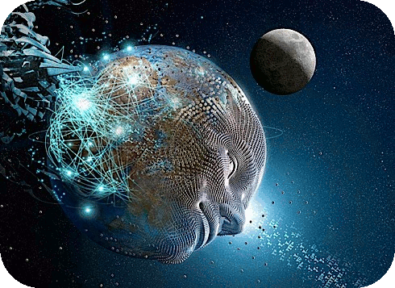

Chaos versus Hierarchy? |
|
|---|---|
 |
 |
Our models of society are failing us:
We used to think of society in terms of the picture on the right; but it seems to be more like the picture on the left;
This creates an impression that there are no good models for understanding and predicting what is going on...
.. but we still think in terms of hierarchies.
We still think and construct our governance structures in terms of hierarchies
This is clearly not adequate, but ... how can we make sense of the system otherwise?
Factual necessity

Focusing on the "objective" actualities of the system. In physics and chemistry, no matter how we want something, the phenomena depend on the natural laws.
Value-based perspective

Highlights the observer’s projections / point of view
In natural sciences, observer projections are regarded as researcher biases which distort the reality and therefore should be best averted. In human sciences (including social sciences) the picture is much more complicated - values/projections and prejudices are important part of the system being researched - the system cannot be adequately understood / analysed without including them.

A worldview is a gestalt perception - unique and integrated cognitive structure - held collectively or individually, in relation to self, others, society or cosmos at large.
As such, it includes:
Our
aspirations
1) Exploration, growth and development;
2) Stability and safety;
Our
"tendencies" and possibilies
1) Survival;
2) Abundance;
3) Dystopia...
Our
approaches to governance
3) Domination of individual states...
1) World government;
2) Distributed governance;
Reflexivity
of the social systems

- In social systems this concept refers to the property of the system to be:
- (1) created by the collective actions of participants;
- (2)exerting the influence on the behaviour of the participants;
Friend or foe? |
|
|---|---|
 |
 |
Consider an example: when two people meet for the first time, they do not know how to approach each other - as a friend or as a foe.
Friend? |
|
|---|---|
 |
|
If it happens so, that one of the persons starts to smile,
Friend! |
|
|---|---|
|
 |
The probability is high that another will start smiling too, resulting in a friendly encounter.
Foe? |
|
|---|---|
|
 |
If at first one of the person frowns (accidentally, or not)
Foe! |
|
|---|---|
 |
|
Then probably another will frown back, resulting in somewhat unfriendly encounter.
"I think the most
important question facing humanity is,
'Is the universe a friendly place?'
This is the first and most basic question
all people must answer for themselves.[...]"
Albert Einstein.
In society this dynamics also happens among different scales (i.e. when individuals meet families, communities, the world and universe).
A World of Views:

If we substitute the subsystems with worldviews defined earlier, we get a schematic picture of how world of views operate:
Social subsystems -
embodiments of worldviews

Which illustrates the point that social sub-systems actually are embodiments of woldviews at different scales which operate as cognitive agents with their own knowledge, competences, values, goals and 'style' of behaviour.
Interaction among sub-systems (persons included) are generally describable as interactions among worldviews.
By taking this perspective, we can start describing not only interactions at one scale (i.e. persons with persons), but between scales (i.e. persons with nation states, etc.).
The Global Brain is A World of Views

We approach an image of the Global Brain from this perspective
A World of Views is our image of an entity also known as A Global Brain. The image of A World of Views emphasizes an ecological view to the global society, without any locus of control, something that is associated with the human mind/brain in A Global Brain metaphor. Yet this is not how we see it: the human brain/mind is not a unified entity but rather an ecology of interacting neurons, their assemblages, areas, activation patterns, thoughts, etc. There is a coordination / coherence aspect which makes us prefer one action over another (e.g. drinking beer instead of wine or vice versa in a concrete and temporary situation). Both these aspects are inseparable from each other and will interact in a future global society.
Dynamics:
assemblage theory and cognitive development
Dynamics within the ecology of a World of Views is based on interacting processes of integration and disintegration
Integrated
focal scale

Note, that:
- The subsystems are never 'fully' integrated / disintegrated: we can speak about measure / degree of integration within the spectrum between 'full' integration and 'full' disintegration;
- Furthermore, the integration and disintegration happens across scales... (cont.)
Integrated
focal scale
...therefore we can select a 'focal' scale and observe it in the context of surrounding scales.
Disintegrated
focal scale

But in case of disintegration, actually, the whole scale of the system disappears - we cannot identify any observable system or agent at that scale, which also profoundly alter scales above and below..
This observation leads us to an important concept:
Interplay of internal and external relations

That...
Living cognitive systems emerge from interplay of internal and external relations:
- Interiority: internal relations 'within' the sub-system, among the components (i.e. subsystems at a lower scale);
- Exteriority: external relations 'outside' the sub-system (i.e. among the systems at a higher scale);
Emergence of a cognitive agent

Explaining the emergence a living cognitive system / agent between the scales
Synthetic
cognitive
development
- We argue that this is the general process of of open-ended intelligence expansion therefore we call it
- Synthetic cognitive development
- -- Interplay of external and internal relations
- -- Emergence of cognitive agent via cognitive development
- -- Due to the cycles of integration and disintegration
Every slide within SCD needs a further comment on it in digitalWoVnotes....
Metastability

The first is the one of 'metastability' as applied to the understanding of the dynamics of the complex systems.
An good example of metastability in social systems is stock market where expectations and projections of traders play a major role in determining the actual direction of development.
1. the phenomenon when a system
is permanently in a configuration other than
the system's state of least energy;
+
'Classically', metastability is "denotes a phenomena when a system spends an extended time in a configuration other than the system's state of least energy
Something like the picture - the state of the least energy is not what people usually do on the trampoline...
2. the basins of attraction
are in permanent flux
(no stable state of least energy);
Yet there is another part to metastability - that the basins of attraction of the system are in permanent flux
Intuitively, there is no place on the trampoline (when used at the same time by more than one person) where another one would be at permanent rest.
Btw, if you tried this exercise you know, that it is impossible without certain level of coordination between jumping persons...
Progressive determination of structure and operation:
$$S \rightarrow O \rightarrow S \rightarrow O \rightarrow S ...$$
The coupling of structure and dynamics of a metastable system (Living Cognitive Society is such a system) happens via the mechanism of progressive determination
Think of chain of transformations where series of operations is applied on a structures (as inputs and outputs of that operation); But in our case the transformation itself depends on the input and is not completely determined before the input has been fed into the function...
Therefore, progressive determination:
- Describes how every next structure depends on the operation and every next operation depends on the structure;
- The inherent unpredictability of the process with can lead both to more coupling or less coupling;
One of them - reflexivity - I have already mentioned a few moments ago.
Others are:
Hyper-connectivity
is a major symptom of progress, resulting in our world becoming progressively more connected at many levels where every agent and event is connected by numerous means to many other agents and events;
Accelerating change

As more information is fed to agents (from events of other agents), they produce more events in response, which produces in turn even more information for yet other agents. This information overload inhibits our ability to predict due to increasing processing power needed.
Dame Agatha Mary Clarissa Christie

 |
Nikolas
|
|---|
Sometimes called 'the greatest mathematician who never existed' - a group of 20th century mathematicians publishing under collective pseudonym wrote series of highly influential books.
From the perspective of the social system these are single and integrated identities

Wikipedia is a famous example how we can get a trusted source of information without trusted individuals involved in producing it. Doesn't it mean that Wikipedia has its distinct 'individuality' not reducible to any people involved?
Decentralized/distributed
autonomous organizations/corporations

It is not a big stretch for imagination to envision semi-automated entities: businesses, non-governmental organizations or even government institutions with variable degree of human involvement (starting from 0 :).

The global society will have a fluid identity (or rather, fluid process) emerged from the ecology of interacting diverse embodiments of multiple worldviews. This identity will reflexively shape the underlying worldviews themselves in a circular manner.
Information technology is the great amplifier of the fluidity of society. Yet technology itself will not determine the directions of its own disruptive impact. What will determine these directions are "modes of social inscription" of the same technologies, i.e. - worldviews and their embodiments:
IT can be used to implement total control or facilitate total freedom of expression (as demonstrated by the case "NSA vs. Snowden").


For example: individuals,
families,
cities, institutions and companies,
countries and nation states...